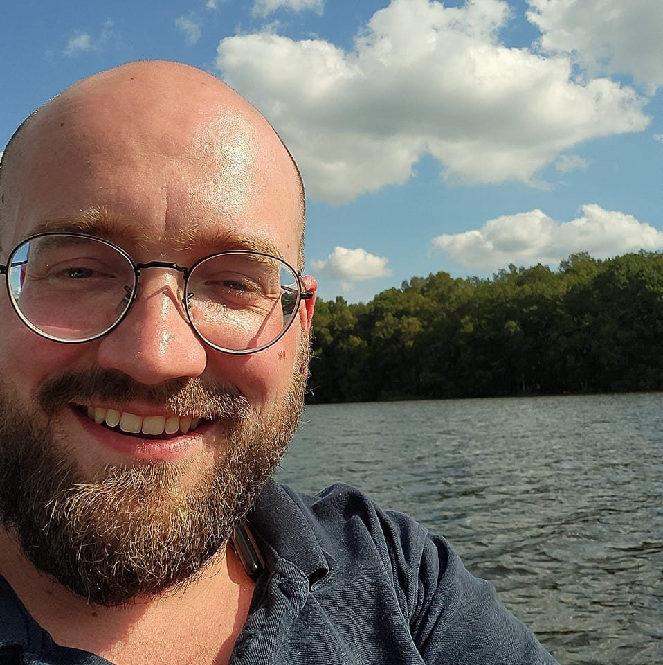
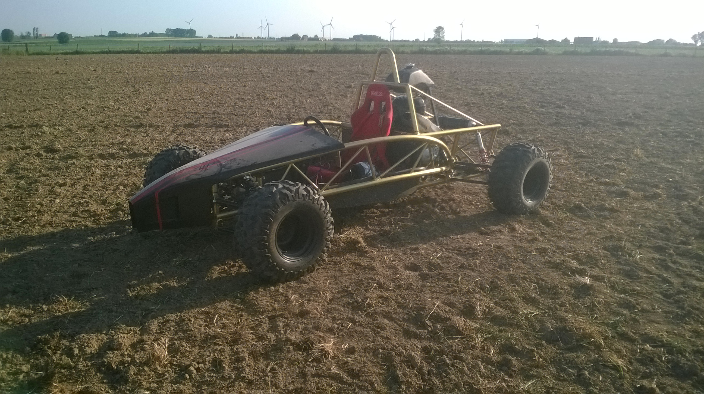

Ik ben Neil — de persoon achter NDE Service. Geen groot bedrijf, gewoon iemand die graag met metaal werkt en problemen oplost.

Ik heb mijn eerste lasboog getrokken toen ik 12 was. Sindsdien ben ik nooit meer gestopt. Na mijn opleiding mechanische vormgevingstechnieken aan het VTI in Ieper wist ik: ik wil iets met metaal blijven doen.
Lassen zit in mijn vingers — inmiddels meer dan 17 jaar. Maar draaien en frezen? Dat is waar ik het liefst mee bezig ben. Precisiewerk. Iets maken dat klopt tot op de honderdste millimeter.
Met NDE Service combineer ik die twee: ik kom ter plaatse, las versleten boringen op, en breng ze terug naar originele maat.
Geen grote firma, geen tussenpersonen. Je belt mij, ik kom langs, ik los het op. Ik draag mijn hart op de mouw — ook in mijn werk.

Om mijn opleiding aan het VTI Ieper af te ronden, maakte ik mijn eigen Crossbuggy. Een project waar ik nog steeds trots op ben — het toont wat mogelijk is met de juiste combinatie van techniek en geduld.